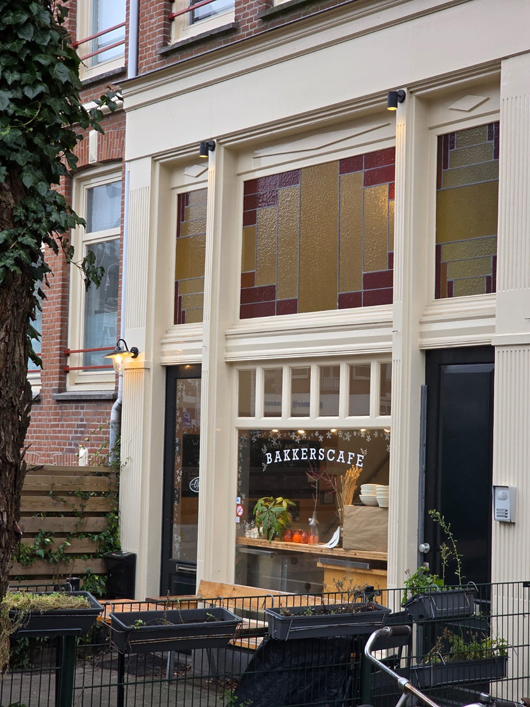
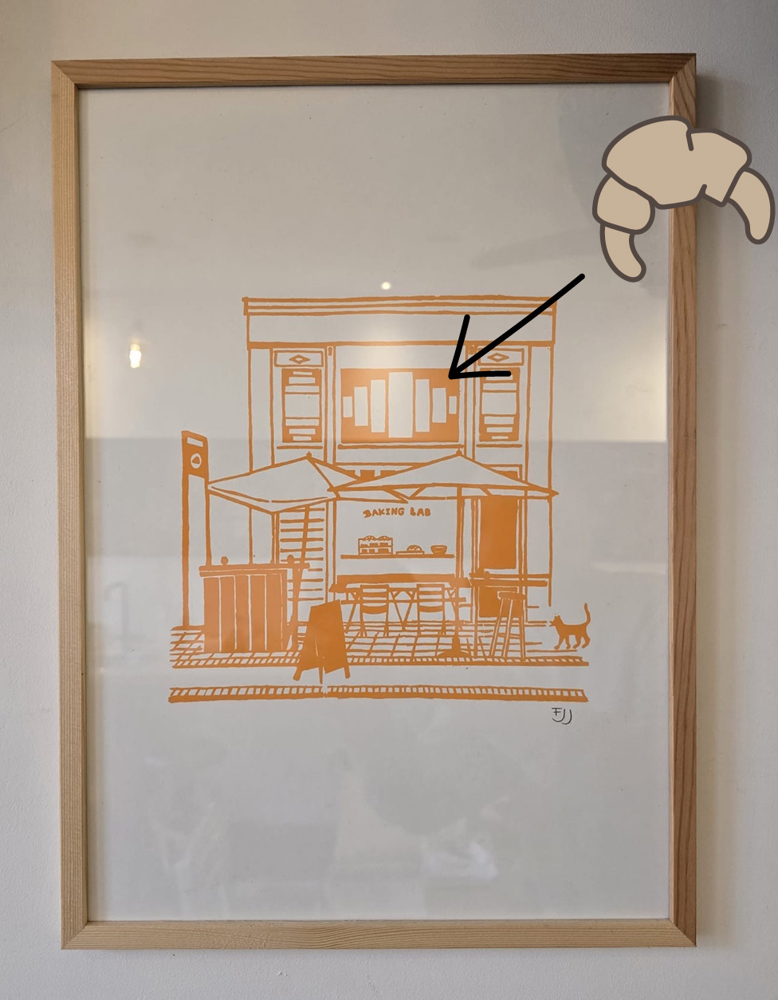

Hoi, ik ben Daisy!
Wist je dat 1/3 van al het geproduceerde voedsel in de wereld wordt verspild? En drie keer raden wat het meest verspilde product in Nederland is...... Precies, brood!!
Ken jij Baking Lab al? Zij pakken dit probleem aan. Dit doen ze lerend en experimenterend. Ze bedenken heerlijke nieuwe recepten waarbij ze oud brood gebruiken om zo de verspilling tegen te gaan.
Deze heerlijke desembroden bakken ze in hun microbakkerij.
Heb je trouwens hun croissantje al gespot?